Sketchプラグインを適当に選んで紹介していく、Sketch Plugin Advent Calendar 2016 17日目は、開発に必要な幅やフォントなどの情報を書き込むド定番の「Sketch Measureプラグイン」です。
ツールバーを表示し、オブジェクトを選択した状態でアイコンをクリックすると、情報がドキュメントへ追加されます。ツールバー表示のショートカットはControl + Shift + Bです。
ツールバーはそれぞれ次のメニューに対応しています。
1. Mark Overlay
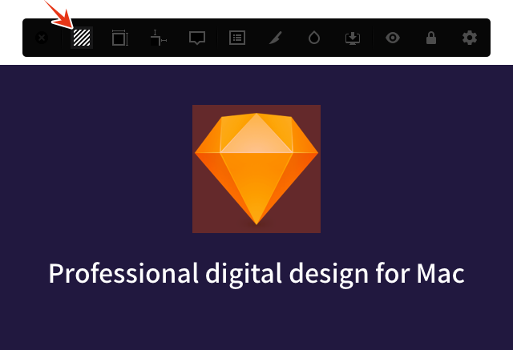
選択しているオブジェクトの大きさに合わせて、半透明の矩形を挿入します。
ショートカットはControl + Shift + 1です。
2. Mark Sizes
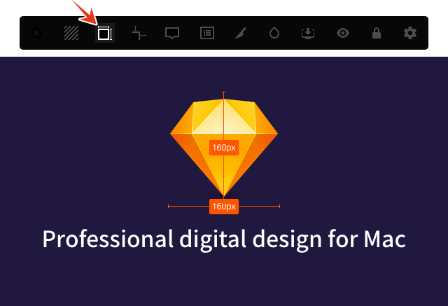
選択しているオブジェクトの幅と高さを挿入します。
ショートカットはControl + Shift + 2です。
個別に幅や高さのどちらかだけにしたい場合や、挿入する位置を指定したい場合などは、Optionキーを押しながらアイコンをクリックし、次のウィンドウで設定してください。
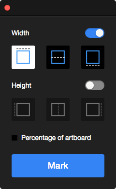
3. Mark Spacings
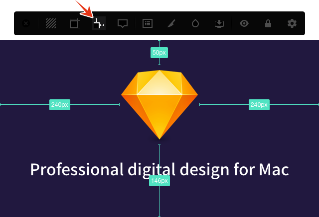
選択しているオブジェクトとアートボードとの距離を上下左右で挿入します。
ショートカットはControl + Shift + 3です。
いずれか一方にしたい場合やパーセンテージで挿入したい場合は、Optionキーを押しながらアイコンをクリックし、次のウィンドウで設定してください。
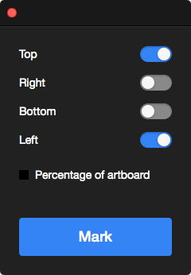
4. Mark Properties
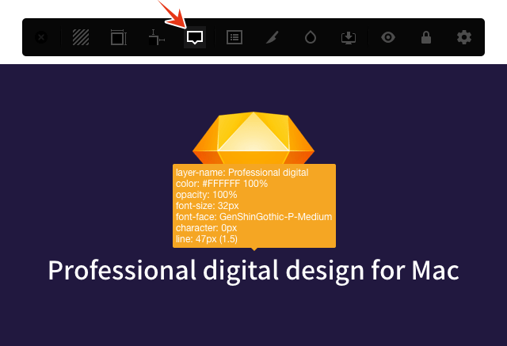
選択しているオブジェクトのさまざまなプロパティを挿入します。
ショートカットはControl + Shift + 4です。
挿入するプロパティをや方向を指定する場合は、Optionキーを押しながらアイコンをクリックし、次のウィンドウで設定をしてください。
5. Mark Note
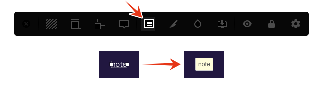
テキストレイヤーをメモに変換します。
ショートカットはControl + Shift + 5です。
Make Exportable
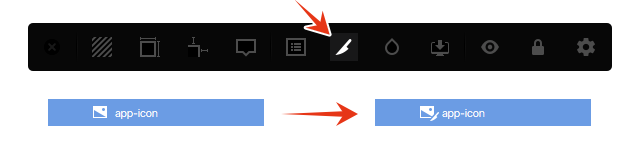
選択しているオブジェクトへ「Exportable」を設定します。Optionキーを押しながらアイコンをクリックすると「スライス」を挿入します。
Color Names
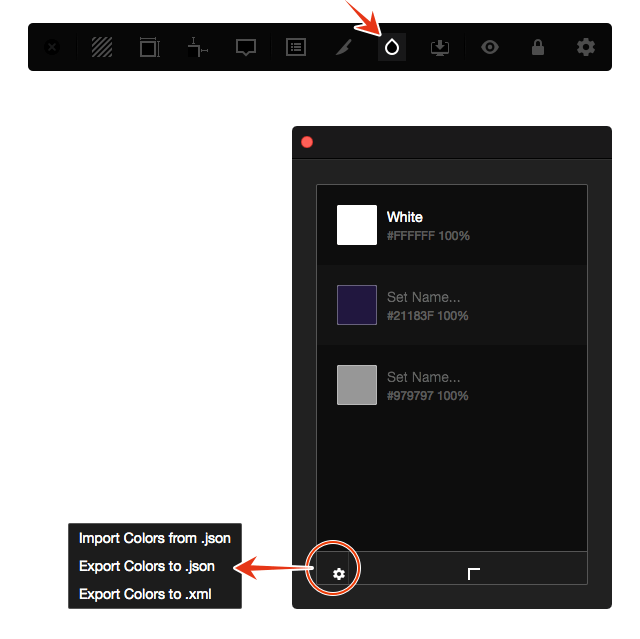
オブジェクトを選択した状態でアイコンをクリックし、表示されたウィンドウの下にある「＋」アイコンで色を登録していきます。登録した色は「＋」アイコンの左にある「歯車」アイコンから書き出しや読み込みをすることができます。
Spec Export
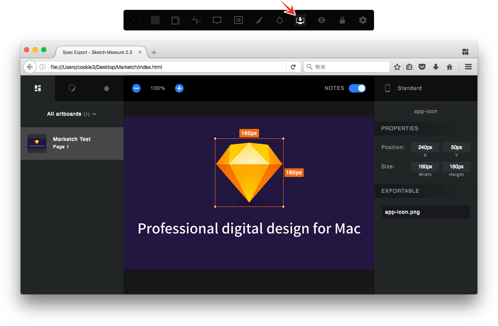
Marketchのようにブラウザで確認できるよう、HTMLとして書き出しします。ほぼMarketchと同じですが、書き出し機能はありません。
Toggle Hidden
Sketch Measureで挿入したオブジェクトの表示・非表示を切り替えます。
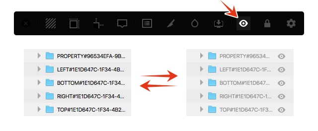
Toggle Locked
Sketch Measureで挿入したオブジェクトのロック状態を切り替えます。
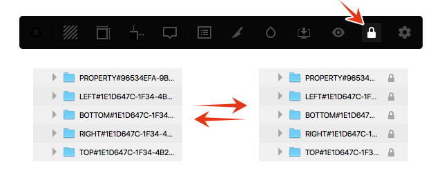
Settings
解像度や単位など、Sketch Measureの基本的な設定を行います。
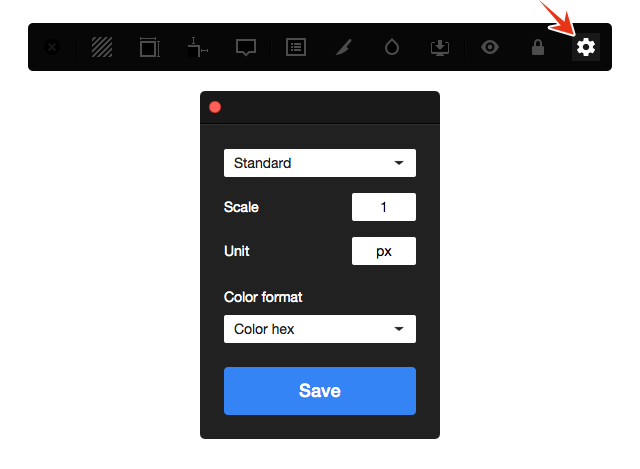
Clear Marks
Sketch Measureで挿入したオブジェクトすべてを削除します。これはツールバーにはありませんので、Pluginsメニューから実行する必要があります。
それでは、楽しいSketchライフを。